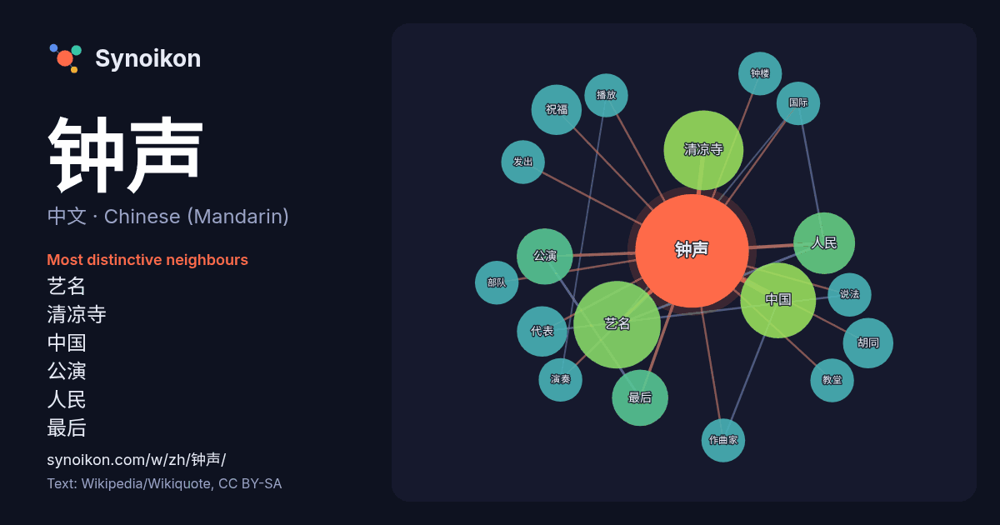

中文 · Chinese (Mandarin) · word of the day list
钟声
“bell toll” · The words found around it in 163 instances from Chinese (Mandarin) Wikipedia, Wikiquote.

Most distinctive neighbours
- 艺名 13×
- 清凉寺 11×
- 中国 6.9×
- 公演 5.9×
- 人民 5.7×
- 最后 5.5×
- 祝福 5.0×
- 胡同 5.0×
- 代表 4.0×
- 钟楼 4.0×
- 作曲家 4.0×
- 发出 3.9×
- 说法 3.9×
- 演奏 3.9×
- 播放 3.8×
- 教堂 3.8×
- 部队 3.7×
- 国际 3.5×
× = how many times more often than in general Chinese (Mandarin) Wikipedia text.
Most frequent neighbours
- 艺名 12
- 清凉寺 10
- 中国 9
- 人民 6
- 公演 5
- 最后 5
- 代表 4
- 呼唤 4
- 祝福 4
- 胡同 4
- team 3
- 作曲家 3
- 发出 3
- 国际 3
- 播放 3
- 教堂 3
- 新年 3
- 演奏 3
- 说法 3
- 部队 3
In context
- 钟声可以指： 劉藝舟，艺名钟声 王钟声，艺名钟声 人民日报社国际部使用的写作组笔名之一，取“中国之声”之意 Wikipedia snippets · 钟声
- 威斯敏斯特钟声 1945年1月1日午夜大笨钟的钟声 播放此文件有问题？请参见媒體幫助。 威斯敏斯特钟声，又名威斯敏斯特旋律、西敏寺钟声，是英国伦敦威斯敏斯特宫大笨钟报时用的乐曲，也是国际通行的一种报时音乐。因为其最初来源于剑桥大圣玛利亚教堂，有时也被称作剑桥钟声。 Wikipedia snippets · 威斯敏斯特钟声
- 《戰地鐘聲》（英語：For Whom the Bell Tolls，或译作《战地钟声》），是美國知名作家歐內斯特·海明威於1940年出版的小說。 該小說與《太陽依舊升起》、《戰地春夢》和《老人與海》同樣被認為是海明威最好的作品之一。 《丧钟为谁而鸣》描寫了一九三七年的西班牙內戰。以美国人参加西班牙 Wikipedia snippets · 戰地鐘聲
- Team K 4th Stage「最终钟声鸣响」是AKB48 Team K的第4台剧场公演。 AKB48 Team K的第4台剧场公演，包含有歌唱女同恋爱的「雄蕊雌蕊夜之蝶」及使用了全组成员写真纸板的「16人姐妹之歌」的歌曲。之后也被使用为SNH48的第一台公演 《overture》 （作曲、编曲：尾澤拓実 歌：TAZ） Wikipedia snippets · Team K 4th Stage“最终钟声鸣响”
- 《祝福的钟声》（日語：祝福のカンパネラ -la campanella della benedizione-）是由日本遊戲公司Windmill Oasis在2009年1月30日發售的戀愛冒險類型成人遊戲，2010年9月30日由角川書店發售PlayStation Portable版《祝福的鐘聲 Wikipedia snippets · 祝福的钟声
- 幸せの鐘（幸福的钟声）是中国藏族歌手阿兰·达瓦卓玛（alan）的网络音樂下載曲，中文版为《爱就是手》。 2008年5月12日中国发生汶川大地震，为了对这次自然灾害进行援助而发表了这首歌曲。音樂下載收益全部捐献给红十字会。 2008年5月20日由avex trax发布。在中国以该曲的中文版《爱就是手》开始音樂下載。 Wikipedia snippets · 幸福的钟声
- 《外滩钟声》，2018年中国时代剧。由俞灏明、吴谨言领衔主演，浙江卫视、安徽卫视于2018年12月10日首播。 同时段或交叉时段主要节目： CCTV-1：《大浦東》 CCTV-8：《北部灣人家》／《奔騰歲月》／《姥姥的餃子館》 湖南：《那座城這家人》／《知否？知否？应是绿肥红瘦》 東方、北京：《大江大河》 Wikipedia snippets · 外滩钟声
- 116°22′40″E / 39.9089695°N 116.3778861°E / 39.9089695; 116.3778861 钟声胡同，是位于北京市西城区中部的一条胡同。 钟声胡同为南北走向，南到西长安街，北到兴隆街。全长320米，平均宽度5米。明朝弘治元年（1488年），百户（明代官名）王敏上奏明 Wikipedia snippets · 钟声胡同
More Chinese (Mandarin) words
Precomputed on 2026-10-09 with default settings (±5 words, medium corpus). The interactive map can refresh it with live data.